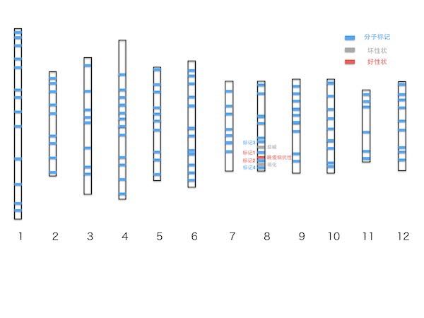
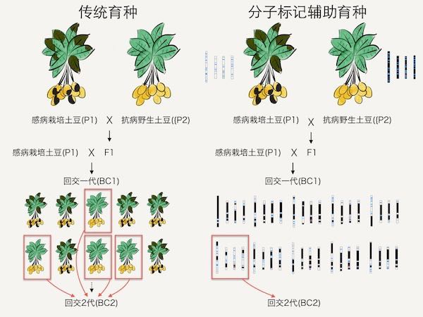

土豆到底叫啥？
土豆的中国学名叫马铃薯，它还有很多的别名。广东叫薯仔/荷兰豆，山东叫地蛋，陕北叫山叶，安徽叫地瓜/地豆，云南和四川叫洋芋，湖北叫洋芋，绍兴叫洋番薯，河北叫山药，内蒙叫山药蛋，湖南叫芋头，苏北叫地豆子……
土豆在国外也有很多好玩的名称，比如地苹果、地梨等等。
它的拉丁学名叫做 Solanum tuberosum L.，这是在国内最常见的栽培马铃薯种名，在南美其实还有其他的栽培土豆物种，比如 Solanum ajanhuiri, Solanum curtilobum 和 Solanum juzepczukii。
植物学小提示：在每种语言里，对同一个生物可能有很多不同的叫法，为了能让所有生物都有一个通用的学名，最常用的命名系统叫做二名法，由瑞典植物学家林奈（Linnaeus）于 1753 年推广开来。简单来说，就是植物的属名加上种名，最后再加上命名者的名字。
茄科植物
土豆的属名是 Solanum, 中文是茄属，茄子和番茄也是茄科茄属，它们的拉丁名分别叫 Solanum melongena 和 Sola-num lycopersicum，而番茄是作物里和土豆亲缘关系最近的，这也是为什么科学家多年来一直想培育出地上长番茄、地下长土豆的「番茄土豆」。再往前推一点，茄科（Solanaceae）的物种可就更多了，比如烟草、辣椒、枸杞、酸浆，还有一些有毒的植物，比如颠茄、曼陀罗等等……
也正是因为不少茄科植物都有毒，所以茄科还有一个很酷的名字叫做「Nightshades」, 翻译过来是「夜影」。
土豆的起源和驯化
土豆起源于南美的安第斯山脉(陆地上最长的山脉，约有 7000 公里长，平均高度为 4000 米。横穿 8 个南美国家，由北到南依次是委内瑞拉、哥伦比亚、厄瓜多尔、秘鲁、玻利维亚、智利及阿根廷。美洲的第一高峰阿空加瓜山也属于安第斯山脉，它在阿根廷境内，高达 6962 米，是亚洲以外最高的山峰)。
根据分子生物学的证据，大概 1400 万年前，茄子和番茄土豆的祖先分化；之后在 700 万年前，番茄和土豆分化。而距今大约是在 1 万年前，南美安第斯山脉当地的农民开始驯化土豆作为食物。
土豆传入欧洲
土豆起源于南美安第斯山脉，当地的印加人称之为「papas」, 而当那些西班牙的探险家们将土豆带回本土的时候，也沿用了这个名字。但后来也许是因为 papa 和「爸爸」的发音很相似，西班牙人将土豆称为 patata。随后传播到了意大利，同样沿用了 patata 这个称呼。在英国，人们习惯称呼土豆为「白土豆」(white potato)，到了西欧，土豆又变成了「地苹果」或者「地梨」，比如法国、荷兰、芬兰甚至希腊都是这么称呼土豆的。后来，随着欧洲殖民活动的展开，土豆的各种外号也传到了不同的殖民地，比如印度的有些地方由于被葡萄牙殖民过，所以叫土豆 batata。而在中国，那些「洋」字头的名字也是因为土豆是西方舶来品。
土豆刚刚传播到欧洲的时候，名声可并不好。人们通常都是本能地惧怕和排斥新事物，其他作物都是靠种子繁殖，而种土豆一般都是靠一小块种薯，大家觉得这种从地里挖出来的脏兮兮的东西是「魔鬼的食物」，所以那个时候，土豆主要是用来喂猪或者给监狱里的囚犯吃。
在 17-18 世纪的欧洲，饥饿是个很普遍的现象。从 1500 到 1800 年间，有过 40 场全国范围内的饥荒；平均每十年就发生超过一场。简而言之，欧洲大陆依赖小麦的农业系统不能喂饱自己的人民。
但土豆改变了这一切。每年农民都会休耕超过一半的谷物田地，一方面为了恢复土壤肥力，同时还要去除杂草。而有了土豆后，农民就可以在这段时间种上土豆。由于土豆产量极高，所以从卡路里的角度来看，它使欧洲的食物供给翻了一倍。
在 18 世纪末，土豆在欧洲的大部分地方都成为了主食。在爱尔兰，有大概 40% 的人除了土豆吃不到任何固体食物，而在荷兰，比利时，普鲁士和波兰，大概有 10%-30% 的人同样只有土豆吃。在吃土豆的国家，频繁的饥荒从此消失。终于，欧洲这片土地上的人民能吃饱了。
土豆晚疫病
土豆晚疫病，这种病害的罪魁祸首——Phytophthora in-festans, 中文学名是致病疫霉。这东西属于卵菌，它主要的宿主是番茄和土豆。致病疫霉是一种半活体寄生的病原菌，它会释放游动孢子，当孢子附着到植物上就会开始萌发，长出菌丝插入植物的细胞吸取养分，在生长的后期杀死植物细胞。它还能全方位的侵染植物，一般是从叶子开始，能看到明显的病斑，之后会快速传播到其他组织，所以即使得病的植株能长出土豆，很可能也是被晚疫病菌侵染过的。
土豆的种植方式主要是依靠薯块本身进行无性繁殖，这是因为土豆的基因组高度杂合，且有着自交不亲和或者自交衰退的现象，而通过杂交生产出来的种子，后代的所有性状都会疯狂地分离，导致一块田里的土豆可能长得形状各异。正因为依靠薯块进行的无性繁殖，导致了欧洲的土豆没有任何遗传多样性；好处是人们喜欢的性状都将得以保留，比如大薯块、低茄碱等等。但同时，这也导致了如果它们对某种病原菌缺乏抗性，如果这种病原菌有足够的传播能力，那么所有的土豆都将毁于一旦。
1845 年 9 月，爱尔兰农民发现土豆遭受了一种以前没见过的病害，这就是晚疫病。在 1845 年晚疫病刚刚传播到爱尔兰的时候，它摧毁了当年 40% 左右的土豆。
由于当时对于晚疫病缺乏了解，那些被感染的烂土豆都被留在了田里，这就导致了晚疫病菌可以继续存活。到了 1846 年，这些潜伏的晚疫病菌一下子摧毁了 90% 的土豆。而在那个时代，人们对于植物的病害根本束手无策。
1845 到 1852，由于土豆晚疫病造成的大饥荒，导致超过一百万人饿死，又有超过两百万爱尔兰人移民到其他国家，其中大部分都去了美国。因此爱尔兰的人口几乎下降了一半，至今还没有恢复到大饥荒前的数量。晚疫病可能是爱尔兰人民心中永远的痛，在当地有这么一句爱尔兰谚语：
这个世界上只有两件事绝对不能开玩笑：婚姻和土豆。
晚疫病后的欧洲土豆
晚疫病促进了化学农药的发展。当时土豆瘟疫后，人们想方设法去寻找晚疫病的解决方案。最终有一个人偶然发现用剩下的绿色颜料竟然能杀死晚疫病菌——这种绿色颜料是由砒霜和铜等成分组成——所以开始将这种绿色颜料稀释，然后喷洒到得病的土豆田里。
对于农民来说，巴黎绿就像是上天的礼物，而化学家们也从中得到启发——如果砒霜能杀死土豆甲虫，那为什么不试试是否能杀死其他害虫呢？如果巴黎绿能杀死晚疫病菌，那其他化学试剂是否能解决别的农业问题？就这样，现代农药产业慢慢开始发展了。
同时，植物育种家也在努力。他们开始尝试培育出具有晚疫病抗性的土豆，最开始的策略是将野生土豆里的抗性转入栽培土豆。
这场瘟疫并不能浇灭欧洲人民对土豆的热情，很多文艺作品也在这之后被创作出来，不仅有法国画家米勒于 1861 年创作的「种土豆的」，更有梵高 1885 年创作的「吃土豆的人」。
同时，土豆也随着欧洲的殖民而流传到全球，比如印度、中国、新西兰、非洲等地。
土豆到中国
中国现在的土豆种植面积和土豆消费量是世界第一，但产量并不高，大概只有荷兰产量的三分之一。2015 年，农业部宣布，将要启动土豆主粮化战略。
在南方，早在 1603 年，荷兰人就在中国台湾的澎湖岛上种上了土豆，后来在 1623 年到 1662 年，荷兰占领台湾期间，也在台湾岛上开始栽种土豆。之后荷兰人开始和中国东南沿海的省份进行贸易，就在这个时候将土豆引入到东南沿海一带。那里的很多地方，至今还将土豆称为「荷兰薯」。
和土豆开始在欧洲的冷遇不同，在中国，土豆一上来就是高级货。明朝的时候，土豆被传到北京，作为皇家特供食品，由专门的皇家菜户供应。在清朝取消了明朝的蔬菜供应系统，土豆这才传入民间，登上了百姓的餐桌。
而西部的土豆可能先是通过印度、缅甸等地传入云南，后来又传到四川、贵州。在当地，现在还有很多人称土豆为洋芋。
还有一些可能的传入途径，比如是通过俄国传教士，在十七世纪早期由西伯利亚传入山西、陕西，之后又传到东北一代。
土豆的育种
植物育种可以说是科学和艺术的结合，所以植物育种家不仅仅要有丰富的植物学、遗传学、统计的背景，有时候还需要玩一些花招。为了让作物更好地满足人们的需求，就要靠植物育种家们通过各种手段去改善植物的各种性状。在育种上，有一些性状普遍很重要，比如高产量、抗虫抗病、低龙葵碱、耐旱、耐储藏等等。还有一些性状就完全是为了满足不同的需求或者不同地方人的喜好了。
按照功能来分类，可以简单地将土豆分为餐用、加工用（薯条、薯片等等）、饲料用和工业用途，每种都要满足不同的标准。工业用途要特殊的支链淀粉，从而更好地应用于造纸业和黏合剂等；加工用的，就需要耐低温储藏，外形适合机器加工，炸出来的薯条、薯片得颜色漂亮；餐用土豆还要考虑不同的加工方法，比如烘烤、油炸、水煮、沙拉用等等。每种用途的土豆都需要特定的性状。
传统育种
通过杂交，从后代中选择出最满意的那个，再通过反复的回交，留下需要的性状，同时去除那些不利的。
概念：基因池 (gene pool）比如一个人有两万个基因，但是每个基因都可能有不同的等位基因（allels），把几十亿人所有可能的所有等位基因都堆到一起，就是人类的基因池了。
土豆育种的过程可能非常漫长，短则十几年，慢则几十年。不过借助现代分子生物学工具，可以很大地提高传统育种的速度。
分子标记辅助育种
知道土豆的基因组已经测序，一共有 12 条染色体，图中蓝色的方块就代表这些分子标记，红色代表我们需要的晚疫病抗性基因，灰色方块代表和抗性基因离得很近的「不好的」基因。我们的育种目标是只保留抗病基因，避免高毒素或者容易变黑等不好的性状。现在有了分子标记，我们不需要再像传统育种项目那样进行大规模的表型测试，只需要提取杂交后代的 DNA，然后利用已有的分子标记对这些材料进行基因型筛选就好。

还是以我们的晚疫病抗性育种项目为例，我们需要保留红色的「晚疫病抗性基因」，但同时要去掉茄碱和褐化基因。我们要做的就是寻找带有标记 1 和标记 2，同时不带有标记 3 和标记 4 的个体。当然，受限于群体数量，我们还是要反复进行几轮回交，从而筛选掉大部分野生型的基因组。

有了分子标记这个工具，可以大大加速植物育种，同时让育种项目的目标和结果都变得更加容易掌控。
分子标记育种的不足
- 分子标记从哪儿来？如果需要进行分子标记育种，我们首先要获得分子标记的连锁图谱，这个任务的工作量巨大，需要大量的时间和经费去开发这些分子标记。
- 如果我们想要的性状来自不可杂交的材料里怎么办？
- 如果我们需要的性状来自动物、细菌，甚至病毒呢？这时候分子标记育种就完全无计可施了。
土豆基因组的测序
随着近几年基因组测序技术的发展，很多植物的基因组都已经完成测序，这对于植物育种有着非常大的帮助。土豆的基因组于 2011 年发表于《 Nature 》杂志。
2005 年，荷兰的瓦赫尼根大学（Wageningen University and Research Cen-ter）组织了国际上很多高校和科研院所，一起组成了「土豆基因组测序国际协作组」（The Potato Genome Sequencing Consortium ，PGSC），共同发起土豆基因组的测序工作。
当时，现任中国农科院蔬菜花卉研究所的生物技术室主任黄三文刚刚在瓦赫尼根大学的植物育种组拿到博士学位，他联系了当时农科院副院长屈冬玉（现任农业部副部长，也是瓦大育种组毕业的博士），决定参与这个测序项目。中国农科院负责土豆十二条染色体中两条的测序工作，黄三文作为首席科学家。
当时二代测序技术正好刚刚兴起，于是黄三文先是和华大基因合作将黄瓜的基因组完成，而那时土豆基因组仍然没有克服瓶颈。于是在积累了二代测序的经验以及各种软件开发后，在 2008 年通过二代测序直接将纯合的双单倍体土豆进行测序。
中国的「土豆主粮化」战略
2015 年 1 月，农业部宣布中国将启动马铃薯主粮化战略：据农业部消息，我国将启动马铃薯主粮化战略，推进把马铃薯加工成馒头、面条、米粉等主食，马铃薯将成稻米、小麦、玉米外又一主粮。预计 2020 年 50% 以上的马铃薯将作为主粮消费。
2016 年 1 月，农业部正式发布了文件「关于推进马铃薯产业开发的指导意见」，将马铃薯作为主粮产品进行产业化开发。
番茄土豆和火星土豆
番茄土豆
在驯化土豆的道路上，人们还在发挥着想象力去探索更多的可能性。
比如土豆只能收获地下的块茎，而地上部分毫无用处；番茄则正好相反。如果能把这俩结合到一起，岂不是能最大化地利用空间？科学家也一直在进行努力和尝试，比如通过传统的杂交手段，由于番茄和土豆都属于茄科茄属，亲缘关系很近，所以如果人工将其杂交，是可以产生种子的，但因为土豆基因组高度杂合，所以后代会出现大量分离，但并没有植株能做到上半部分长番茄而地下部分长土豆。
还有科学家尝试过体细胞杂交技术，把番茄和土豆的细胞融合到一起。虽然这些融合细胞可以再生出新的植物，但结果同样让人失望。
最后成功的案例是靠着一个传统的技术——「嫁接」。其售价高达每株 9.99 英镑，从价格来看，目前还是太高，并不适合大规模商业化生产。
火星土豆
看过电影《火星救援》的朋友一定都对在火星种土豆那段故事印象深刻。这并不是什么想象出来的桥段，事实上，在太空种植蔬菜已经开始进入应用阶段了，至少是在空间站上。
比起其他作物，土豆的最大好处是其既能充当主食提供大量碳水化合物，同时又能起到蔬菜的作用，提供其他所需营养物质。目前 NASA 已经在和国际马铃薯中心（CIP）合作开始在研发火星土豆。
后记
一万年前的南美安第斯山脉；大航海时代的西班牙探险家；靠着土豆终于能够吃饱的欧洲人民；爱尔兰的土豆瘟疫；伟大的土豆育种家；新一代的植物育种技术以及未来的火星土豆。
土豆就这样一步步从不起眼的埋在地下脏兮兮的块茎，被人类驯服从而成为世界上第四大粮食作物。
如今，中国也要进入土豆主粮化时代，希望本文能让更多人了解土豆的故事。